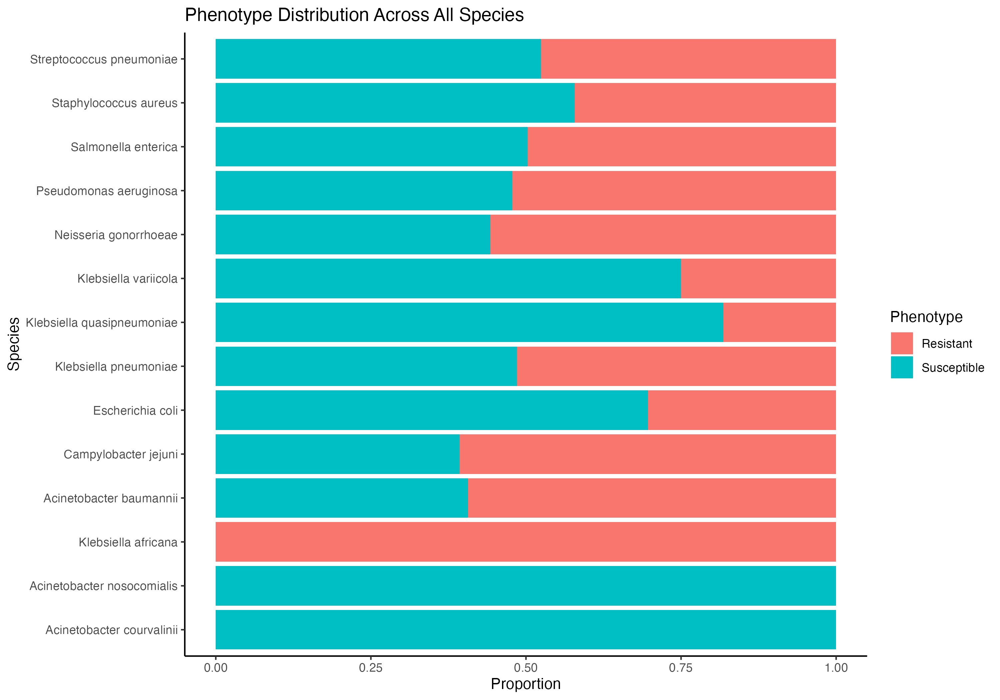
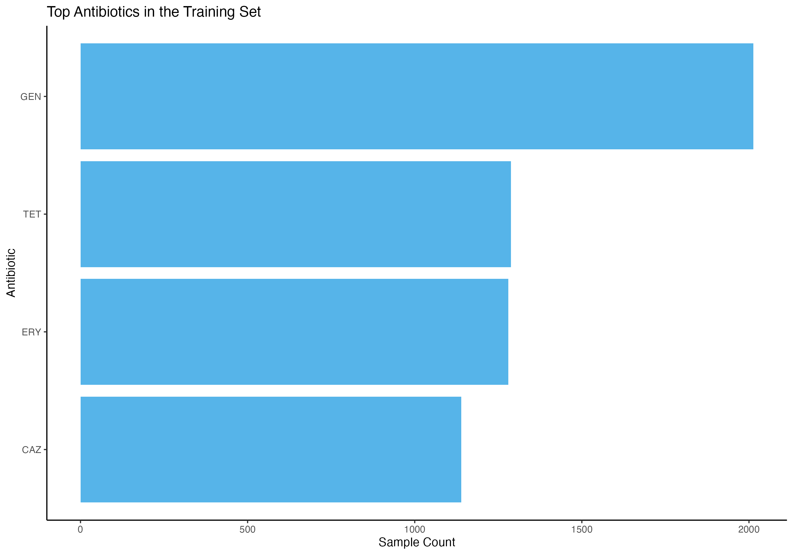

The goal of AMRdb is to provide a curated, high-quality dataset that supports the analysis, visualization, and modeling of antimicrobial resistance (AMR). Specifically, AMRdb enables researchers and data scientists to:
Analyze outputs from Machine Learning (ML) and Deep Learning (DL) models, particularly those related to MIC (Minimum Inhibitory Concentration) predictions and phenotypic classification (Resistant, Intermediate, Susceptible).
Explore clinical and genomic metadata associated with microbial isolates.
Integrate structured data into reproducible workflows for computational AMR surveillance and comparative genomics.
Installation instructions
Get the latest stable R release from CRAN.
install.packages("AMRdb")To install the development version from Github use:
if (!requireNamespace("remotes", quietly = TRUE)) {
install.packages("remotes")
}
remotes::install_github("EveliaCoss/AMRdb")Or you can install AMRdb from Bioconductor using the following code:
if (!requireNamespace("BiocManager", quietly = TRUE)) {
install.packages("BiocManager")
}
BiocManager::install("AMRdb")And the development version from GitHub with:
BiocManager::install("EveliaCoss/AMRdb")About the data
The data included in this package are sourced from publicly available repositories such as the ENA browser, BV-BRC, and NCBI, offering a harmonized foundation for predictive modeling and downstream resistance profiling.
The AMRdb package contains 4 datasets:
Raw metadata
The first dataset is training_metadata_db, which contains the full unprocessed metadata as originally downloaded from the CAMDA 2025 training set. It preserves all column names, formats, and variable structures for traceability and cross-referencing. This dataset complements the cleaned version and supports reproducibility and model auditability; see ?training_metadata_db for more details.
head(training_metadata_db)
#> # A tibble: 6 × 17
#> genus species accession phenotype antibiotic measurement_sign
#> <chr> <chr> <chr> <chr> <chr> <chr>
#> 1 Neisseria gonorrhoeae SRR1661238 Susceptible TET <NA>
#> 2 Neisseria gonorrhoeae SRR5827180 Susceptible TET <NA>
#> 3 Neisseria gonorrhoeae SRR5827125 Susceptible TET <NA>
#> 4 Neisseria gonorrhoeae SRR5827026 Susceptible TET <NA>
#> 5 Neisseria gonorrhoeae SRR5827271 Susceptible TET <NA>
#> 6 Neisseria gonorrhoeae SRR5827340 Susceptible TET <NA>
#> # ℹ 11 more variables: measurement_value <dbl>, measurement_unit <chr>,
#> # laboratory_typing_method <chr>, laboratory_typing_platform <chr>,
#> # testing_standard <chr>, testing_standard_year <chr>, publication <chr>,
#> # isolation_source <chr>, isolation_country <chr>, collection_date <chr>,
#> # scientific_name_CAMDA <chr>The second dataset is test_metadata_db, which includes all original variables and column names exactly as provided in the CAMDA 2025 test set.It serves as the benchmark data for validating ML and DL models built during the challenge. For details on structure and usage, see ?test_metadata_db.
head(test_metadata_db)
#> # A tibble: 6 × 7
#> genus species accession phenotype antibiotic measurement_value
#> <chr> <chr> <chr> <chr> <chr> <chr>
#> 1 Klebsiella pneumoniae SRR5386858 ? GEN ?
#> 2 Klebsiella pneumoniae SRR5386458 ? GEN ?
#> 3 Klebsiella pneumoniae SRR5386457 ? GEN ?
#> 4 Klebsiella pneumoniae SRR5386456 ? GEN ?
#> 5 Klebsiella pneumoniae SRR5386454 ? GEN ?
#> 6 Klebsiella pneumoniae SRR5386452 ? GEN ?
#> # ℹ 1 more variable: scientific_name_CAMDA <chr>Cleaned metadata
The third dataset is training_db_cleaned, which contains curated and preprocessed metadata from the CAMDA 2025 training set (training_metadata_db). Species-level annotations were verified using the Genome Taxonomy Database (GTDB), based on Average Nucleotide Identity (ANI) calculated for each SRA accession. Two new columns were added:
-
scientific_name_new, the corrected species name inferred from GTDB -
new_genus, the revised genus assignment, which can be used in downstream steps to reassess MIC interpretations. See ?training_db_cleaned for full details.
All relevant variables have been standardized for downstream analysis; see ?training_db_cleaned for full details.
head(training_db_cleaned)
#> # A tibble: 6 × 10
#> genus species scientific_name_new accession genome phenotype antibiotic
#> <chr> <chr> <chr> <chr> <chr> <chr> <chr>
#> 1 Neisseria gonorrhoe… Neisseria gonorrho… SRR16612… ENA_S… Suscepti… TET
#> 2 Neisseria gonorrhoe… Neisseria gonorrho… SRR58271… ENA_S… Suscepti… TET
#> 3 Neisseria gonorrhoe… Neisseria gonorrho… SRR58271… ENA_S… Suscepti… TET
#> 4 Neisseria gonorrhoe… Neisseria gonorrho… SRR58270… ENA_S… Suscepti… TET
#> 5 Neisseria gonorrhoe… Neisseria gonorrho… SRR58272… ENA_S… Suscepti… TET
#> 6 Neisseria gonorrhoe… Neisseria gonorrho… SRR58273… ENA_S… Suscepti… TET
#> # ℹ 3 more variables: measurement_value <dbl>, ani <dbl>, new_genus <chr>The fourth dataset is test_db_cleaned, derived from the CAMDA 2025 test set (test_metadata_db). Accessions shared with the training set (training_metadata_db) were removed to avoid data leakage. GTDB-based species validation was performed to verify taxonomic annotations. A new column, scientific_name_new, provides the corrected species name for each sample based on ANI profiling. See ?test_db_cleaned for more information.
head(test_db_cleaned)
#> # A tibble: 6 × 9
#> genus species scientific_name_new accession genome phenotype antibiotic
#> <chr> <chr> <chr> <chr> <chr> <chr> <chr>
#> 1 Klebsiella pneumoni… Klebsiella pneumon… SRR53868… ENA_S… ? GEN
#> 2 Klebsiella pneumoni… Klebsiella pneumon… SRR53864… ENA_S… ? GEN
#> 3 Klebsiella pneumoni… Klebsiella pneumon… SRR53864… ENA_S… ? GEN
#> 4 Klebsiella pneumoni… Klebsiella pneumon… SRR53864… ENA_S… ? GEN
#> 5 Klebsiella pneumoni… Klebsiella pneumon… SRR53864… ENA_S… ? GEN
#> 6 Klebsiella pneumoni… Klebsiella pneumon… SRR53864… ENA_S… ? GEN
#> # ℹ 2 more variables: measurement_value <chr>, ani <dbl>Public metadata
The fifth dataset, antibiograms_db, contains public antimicrobial susceptibility data linked to SRA accessions from both the CAMDA 2025 training and test sets. Records were retrieved from ENA, BV-BRC, and NCBI using a Zenodo reference (version 4, July 4, 2025); see ?antibiograms_db for more info:
head(antibiograms_db)
#> # A tibble: 6 × 14
#> biosample sra_biosample scientific_name_Antibiogram antibiotic phenotype
#> <chr> <chr> <chr> <chr> <chr>
#> 1 SAMN01163409 SRS362631 Enterobacter cloacae tetracycline resistant
#> 2 SAMN01163409 SRS362631 Enterobacter cloacae chlorampheni… resistant
#> 3 SAMN01163409 SRS362631 Enterobacter cloacae ampicillin resistant
#> 4 SAMN01163409 SRS362631 Enterobacter cloacae gentamicin suscepti…
#> 5 SAMN01163409 SRS362631 Enterobacter cloacae colistin suscepti…
#> 6 SAMN01163409 SRS362631 Enterobacter cloacae sulfamethoxa… intermed…
#> # ℹ 9 more variables: measurement_sign <chr>, measurement_value <chr>,
#> # measurement_units <chr>, typing_method <chr>, typing_platform <chr>,
#> # standard <chr>, genomes <chr>, accession <chr>, read_type <chr>The sixth dataset, rgi_results, contains resistance gene features inferred by RGI for CAMDA 2025 training and test samples. It includes sample metadata, prediction targets, and gene/SNP-level features labeled by ARO identifiers. See ?rgi_results for details.
head(rgi_results)
#> # A tibble: 6 × 1,076
#> genus species accession phenotype antibiotic measurement_value
#> <chr> <chr> <chr> <chr> <chr> <chr>
#> 1 Neisseria gonorrhoeae DRR124693 Intermediate TET 0.5
#> 2 Staphylococcus aureus DRR170693 Intermediate ERY 4.0
#> 3 Staphylococcus aureus DRR170697 Intermediate ERY 4.0
#> 4 Staphylococcus aureus DRR170701 Intermediate ERY 4.0
#> 5 Streptococcus pneumoniae ERR016633 Resistant ERY 256.0
#> 6 Streptococcus pneumoniae ERR016635 Resistant ERY 256.0
#> # ℹ 1,070 more variables: categoria_recodificada <dbl>, aro3000464_a121d <dbl>,
#> # aro3000464_g120k <dbl>, aro3003930_v57m <dbl>, aro3004833_l421p <dbl>,
#> # aro3000816 <dbl>, aro3003961 <dbl>, aro3000533 <dbl>, aro3000535 <dbl>,
#> # aro3004832_a311v <dbl>, aro3004832_g545s <dbl>, aro3004832_i312m <dbl>,
#> # aro3004832_f504l <dbl>, aro3004832_t483s <dbl>, aro3004832_v316t <dbl>,
#> # aro3004832_a510v <dbl>, aro3004832_n512y <dbl>, aro3003928_s91f <dbl>,
#> # aro3000999 <dbl>, aro3003929_s87r <dbl>, aro3000186 <dbl>, …Assign MIC categories and interpretive phenotypes by genus
This function is part of the AMRdb package and uses the column new_genus to categorize MIC values and assign interpretive phenotypes. It applies genus-specific breakpoint logic to recategorize measurement_value into standardized MIC bins and determine a phenotype label (Susceptible or Resistant) for each accession.
training_new_mic_db <- process_mic_values(training_db_cleaned, max_mic = 256)
head(training_new_mic_db)Also, you can specify 64, 256, or 1024 as values for the max_mic argument in process_mic_values(). Each option defines a different resolution for binning MIC values and selecting genus-specific breakpoints for phenotype assignment.
-
64is suitable for low-range MICs with coarse categories -
256offers intermediate granularity -
1024provides high-resolution categorization for datasets with wide MIC ranges
ML and DL input matrix
To support downstream machine learning and deep learning workflows, AMRdb provides a structured dataset combining phenotype-labeled metadata and resistance gene features. Specifically, we merged:
-
training_db_cleanedandtest_db_cleaned, containing curated sample metadata and MIC-based phenotypes - The gene family matrix derived from the Resistance Gene Identifier (RGI) analysis, sourced from
?rgi_results
The result is a modeling-ready data frame with harmonized metadata and feature-rich gene/SNP-level annotations indexed by SRA accession. This matrix can be used directly for classification, feature selection, or resistance prediction benchmarking.
str(training_and_test_inputfile_complete[, 1:15])
#> tibble [9,775 × 15] (S3: tbl_df/tbl/data.frame)
#> $ genus : chr [1:9775] "Neisseria" "Neisseria" "Neisseria" "Neisseria" ...
#> $ species : chr [1:9775] "gonorrhoeae" "gonorrhoeae" "gonorrhoeae" "gonorrhoeae" ...
#> $ scientific_name_new: chr [1:9775] "Neisseria gonorrhoeae" "Neisseria gonorrhoeae" "Neisseria gonorrhoeae" "Neisseria gonorrhoeae" ...
#> $ accession : chr [1:9775] "SRR1661238" "SRR5827180" "SRR5827125" "SRR5827026" ...
#> $ genome : chr [1:9775] "ENA_SAMN03201584" "ENA_SAMN07351025" "ENA_SAMN07351011" "ENA_SAMN07351174" ...
#> $ phenotype : chr [1:9775] "Susceptible" "Susceptible" "Susceptible" "Susceptible" ...
#> $ antibiotic : chr [1:9775] "TET" "TET" "TET" "TET" ...
#> $ measurement_value : chr [1:9775] "0.25" "0.12" "0.12" "0.12" ...
#> $ ani : num [1:9775] 0.998 0.997 0.997 0.998 0.997 0.998 0.997 0.997 0.997 0.997 ...
#> $ type : chr [1:9775] "training" "training" "training" "training" ...
#> $ phenotype_assigned : chr [1:9775] "Susceptible" "Susceptible" "Susceptible" "Susceptible" ...
#> $ recategorized_mic : Factor w/ 13 levels "0.06","0.12",..: 3 2 2 2 3 2 1 3 1 2 ...
#> $ aro3000464_a121d : num [1:9775] 0 0 0 0 0 0 1 1 0 0 ...
#> $ aro3000464_g120k : num [1:9775] 0 0 0 0 0 0 1 1 0 0 ...
#> $ aro3003930_v57m : num [1:9775] 0 0 0 0 0 0 1 1 1 0 ...See ?training_and_test_inputfile_complete for details.
Examples
To explore the taxonomic diversity present in the AMRdb metadata, we summarize the number of unique SRA accessions per species across both the training and test datasets. This overview helps assess sample coverage and guides downstream modeling decisions.
You can find extended code and visualization examples in vignette("examples").
library(tidyverse)
# Count unique accessions per species in the training metadata
train_counts_cleaned <- training_db_cleaned %>%
group_by(scientific_name_new) %>%
summarise(trainClean_num_accessions = n_distinct(accession))
# Count unique accessions per species in the testing metadata
test_counts_cleaned <- test_db_cleaned %>%
group_by(scientific_name_new) %>%
summarise(testClean_num_accessions = n_distinct(accession))
# Combine the counts by species, keeping all species present in the training set
combined_counts_completed <- train_counts_cleaned %>%
left_join(test_counts_cleaned, by = "scientific_name_new")
# sum columns
df_total <- combined_counts_completed %>%
summarise(across(where(is.numeric), ~sum(.x, na.rm = TRUE))) %>%
mutate(rowname = "Total") %>%
select(rowname, everything())
combined_counts_completed <- combined_counts_completed %>%
mutate(rowname = rownames(.)) %>%
select(rowname, everything()) %>%
bind_rows(df_total)
# Display the combined counts table
combined_counts_completed %>%
select(-rowname)
#> # A tibble: 15 × 3
#> scientific_name_new trainClean_num_accessions testClean_num_accessions
#> <chr> <int> <int>
#> 1 Acinetobacter baumannii 483 385
#> 2 Acinetobacter courvalinii 1 NA
#> 3 Acinetobacter nosocomialis 3 NA
#> 4 Campylobacter jejuni 537 408
#> 5 Escherichia coli 506 509
#> 6 Klebsiella africana 1 NA
#> 7 Klebsiella pneumoniae 767 468
#> 8 Klebsiella quasipneumoniae 11 NA
#> 9 Klebsiella variicola 12 4
#> 10 Neisseria gonorrhoeae 741 558
#> 11 Pseudomonas aeruginosa 570 147
#> 12 Salmonella enterica 640 619
#> 13 Staphylococcus aureus 570 597
#> 14 Streptococcus pneumoniae 607 350
#> 15 <NA> 5449 4045With training_db_cleaned, you can explore how resistance phenotypes vary across species and identify which taxa show diverse or consistent susceptibility patterns. See more examples in vignette("examples").
training_db_cleaned %>%
group_by(scientific_name_new, phenotype) %>%
summarise(count = n(), .groups = "drop") %>%
pivot_wider(
names_from = phenotype,
values_from = count,
values_fill = 0
)
#> # A tibble: 14 × 4
#> scientific_name_new Intermediate Resistant Susceptible
#> <chr> <int> <int> <int>
#> 1 Acinetobacter baumannii 146 248 170
#> 2 Acinetobacter courvalinii 0 0 1
#> 3 Acinetobacter nosocomialis 0 0 3
#> 4 Campylobacter jejuni 0 326 211
#> 5 Escherichia coli 19 148 340
#> 6 Klebsiella africana 0 1 0
#> 7 Klebsiella pneumoniae 133 326 308
#> 8 Klebsiella quasipneumoniae 0 2 9
#> 9 Klebsiella variicola 0 3 9
#> 10 Neisseria gonorrhoeae 148 336 267
#> 11 Pseudomonas aeruginosa 94 249 228
#> 12 Salmonella enterica 19 346 350
#> 13 Staphylococcus aureus 46 222 305
#> 14 Streptococcus pneumoniae 53 311 343You can use the unified input file for ML and DL (training_and_test_inputfile_complete) to explore phenotype distribution across species. Labels include Susceptible, Resistant, and ? (for test samples without known outcomes). Below is a species-wise summary found in this file. See extended examples in vignette("examples").
training_and_test_inputfile_complete %>%
group_by(scientific_name_new, phenotype_assigned) %>%
summarise(count = n(), .groups = "drop") %>%
pivot_wider(
names_from = phenotype_assigned,
values_from = count,
values_fill = 0
)
#> # A tibble: 21 × 4
#> scientific_name_new `0` Resistant Susceptible
#> <chr> <int> <int> <int>
#> 1 Acinetobacter baumannii 385 394 170
#> 2 Acinetobacter courvalinii 0 0 1
#> 3 Acinetobacter nosocomialis 0 0 3
#> 4 Acinetobacter piscicola 1 0 0
#> 5 Acinetobacter schindleri 2 0 0
#> 6 Acinetobacter sp. 3 0 0
#> 7 Bacillus clausii 1 0 0
#> 8 Campylobacter coli 1 0 0
#> 9 Campylobacter jejuni 408 326 211
#> 10 Escherichia coli 509 154 353
#> # ℹ 11 more rowsGraphs
Antimicrobial resistance becomes easier to interpret when you start visualizing the data. For example:


Citation
Below is the citation output from using citation('AMRdb') in R. Please run this yourself to check for any updates on how to cite AMRdb.
print(citation('AMRdb'), bibtex = TRUE)
#> To cite package 'AMRdb' in publications use:
#>
#> EveliaCoss (2025). _Mi articulo_. doi:10.18129/B9.bioc.AMRdb
#> <https://doi.org/10.18129/B9.bioc.AMRdb>,
#> https://github.com/EveliaCoss/AMRdb/AMRdb - R package version 0.1.0,
#> <http://www.bioconductor.org/packages/AMRdb>.
#>
#> A BibTeX entry for LaTeX users is
#>
#> @Manual{,
#> title = {Mi articulo},
#> author = {{EveliaCoss}},
#> year = {2025},
#> url = {http://www.bioconductor.org/packages/AMRdb},
#> note = {https://github.com/EveliaCoss/AMRdb/AMRdb - R package version 0.1.0},
#> doi = {10.18129/B9.bioc.AMRdb},
#> }
#>
#> EveliaCoss (2025). "Mi articulo." _bioRxiv_. doi:10.1101/TODO
#> <https://doi.org/10.1101/TODO>,
#> <https://www.biorxiv.org/content/10.1101/TODO>.
#>
#> A BibTeX entry for LaTeX users is
#>
#> @Article{,
#> title = {Mi articulo},
#> author = {{EveliaCoss}},
#> year = {2025},
#> journal = {bioRxiv},
#> doi = {10.1101/TODO},
#> url = {https://www.biorxiv.org/content/10.1101/TODO},
#> }Please note that the AMRdb was only made possible thanks to many other R and bioinformatics software authors, which are cited either in the vignettes and/or the paper(s) describing this package.
Code of Conduct
Please note that the AMRdb project is released with a Contributor Code of Conduct. By contributing to this project, you agree to abide by its terms.
This package was developed using biocthis.